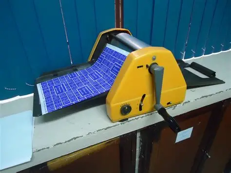

trabalho e tecnologias
Quando observo a evolução da escrita, percebo como a tecnologia
transformou não só as ferramentas, mas também o modo de pensar. A escrita manual tinha ritmo e peso,
cada gesto exigia cuidado e atenção. Com a máquina de escrever, tudo se tornou mais rápido e mecânico,
porém rígido e menos flexível. Já o computador trouxe fluidez, posso apagar, reorganizar e testar ideias
sem limites. Essa mudança técnica tornou o pensamento mais ágil e o processo de criar muito mais dinâmico.
A inovação material acabou gerando também uma inovação social, reduzindo o desgaste humano, diminuindo
resíduos e ampliando a autonomia de quem escreve.

Nas impressoras, essa relação entre técnica e transformação social
é ainda mais evidente. O mimeógrafo dependia de matrizes manuais, álcool e processos que geravam
cheiro forte, resíduos e materiais pouco reaproveitáveis. Com o avanço tecnológico, as impressoras
modernas tornaram o trabalho mais limpo, seguro e acessível. E, com as impressoras 3D, percebo uma
mudança ainda maior. Elas permitem produzir apenas o necessário, reutilizar materiais, criar protótipos
sem desperdício e incentivar práticas de fabricação mais sustentáveis. A inovação material veio acompanhada
de mudanças no comportamento social, com foco na economia de recursos, personalização e maior autonomia
dos usuários.
Nos videogames, a evolução tecnológica também provocou impactos
sociais e ambientais. Consoles como o Atari eram simples e consumiam pouca energia, mas ofereciam
experiências limitadas e individuais. Hoje, mesmo com sistemas mais potentes, houve melhorias na
eficiência energética, redução de materiais tóxicos e práticas de design mais sustentáveis. Ao mesmo
tempo, os jogos deixaram de isolar e passaram a conectar. Comunidades globais surgiram, o acesso se
ampliou e o ato de jogar se transformou em um espaço de convivência, aprendizagem e colaboração.
Apesar das maiores demandas tecnológicas, há um movimento crescente de responsabilidade ambiental
e social nesse setor.
Ao olhar para tudo isso, percebo que a evolução tecnológica não se resume à potência das máquinas.
Ela reflete um esforço contínuo para reduzir impactos ambientais, diminuir o desgaste humano e criar
novas formas de interação, tornando o uso da tecnologia não apenas mais eficiente, mas também mais
consciente.
Em 2020 existiam 64,2 ZB de dados, enquanto hoje esse valor já ultrapassa 149 ZB. Esse
crescimento expressivo mostra como a produção e o uso de dados aumentaram rapidamente com a expansão
das tecnologias. Isso faz sentido quando penso na quantidade de aparelhos presentes no cotidiano.
Eu mesmo uso vários: celular, fones de ouvido, notebook, computador, televisão e outros dispositivos
que nem percebo mais, mas que se tornaram essenciais para a vida diária.

Na área de computação, vejo a uberização aparecer quando profissionais
atuam como prestadores temporários, freelancers ou microtrabalhadores em plataformas digitais,
sujeitos a algoritmos que medem desempenho, controlam ritmo e reduzem segurança ou direitos. Esse
modelo precariza o trabalho, cria competição constante e torna os trabalhadores facilmente substituíveis.
O cooperativismo de plataforma surge como uma resposta a esse cenário. Em vez de plataformas centralizadas
controladas por grandes empresas, os próprios trabalhadores gerem coletivamente os sistemas, compartilhando
lucros, decisões e responsabilidades. Na computação, isso significa softwares, serviços e plataformas
administrados de forma democrática, onde a tecnologia promove autonomia e transparência, reduzindo os
efeitos negativos da uberização. Essa proposta se torna ainda mais relevante hoje, em um contexto de
expansão tecnológica e busca por condições mais justas de trabalho.